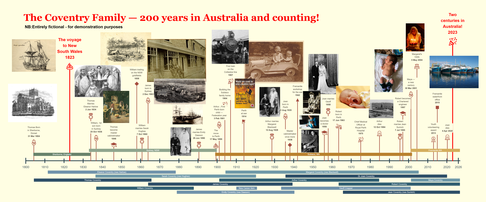

Tell your family's story on a timeline
Turn your photos, events and memories into a beautiful, printable timeline — made entirely on your own computer, with nothing uploaded.
⬇ Download for WindowsFree · always the latest versionWhat you can do with it
Add pictures, key moments and life stages — places lived, career, milestones — and arrange them by drag and drop.
Check a draft print on plain paper, then print at full size or save as a PDF for the print shop.
Type dates the way you think of them, display them the way you like, in UK or US English.
Private by design
Photo Timeline Studio runs offline on your own computer. Your pictures, projects and notes never leave your machine — there is no cloud, no account, and nothing is uploaded when you work or when you update.
Free, with optional support
Photo Timeline Studio is free to download and use — no subscription, and updates are free too. If it's useful to you, you're welcome to buy me a coffee or 5 — this app developer is powered by caffeine.
☕ Support on Ko-fiFound a problem or have an idea? photo.timeline@girtbydirt.com
